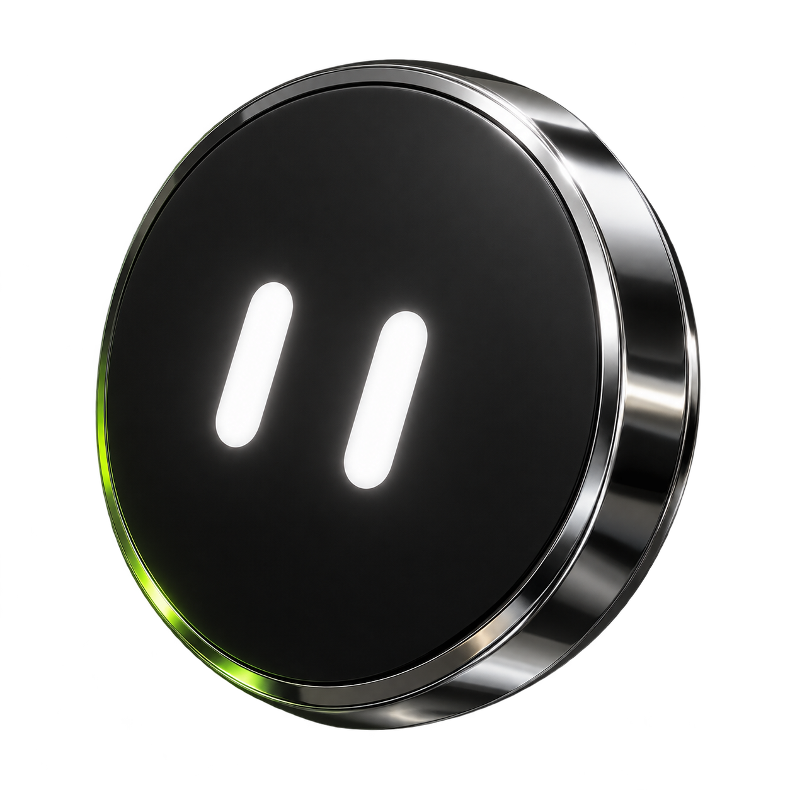
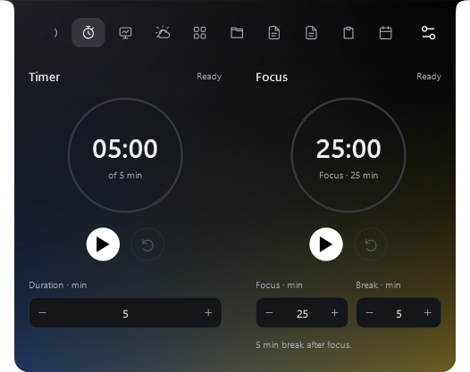
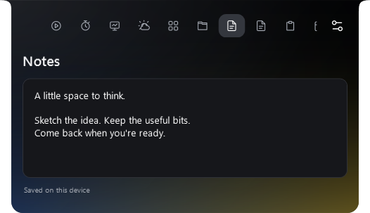

Free & open source.
NABYSCAPE.

Your desktop, your space.
Music. Focus. Your own AI.

Your desktop, your space.
Music. Focus. Your own AI.
Music, focus
and your own AI.
Closed. Just what you need.
Hover. A little closer.
Open. Everything within reach.
A few useful things, close at hand.

Timer, work and break sessions.
A separate stopwatch.

Notes and tasks.
Saved on your device.
Actual v2.10 app captures · isolated sample content